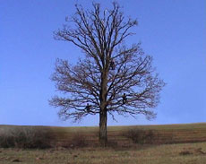
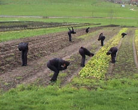

|
PATRICIA GILYTE
Corvidae I (Tree) |D 2006 | 2’20’’ (Loop)
Corvidae II (Field) | D 2006 | 3’40’’ (Loop)
www.patricija-gilyte.net
Die Natur habe ich zunehmend als mein erweitertes Atelier verstanden. Dabei wurde für mich die Frage nach dem Freiraum und nach Besitz interessant, wie viel Außenraum jemand zur Verfügung hat. Während meiner Kindheit im sowjetischen Litauen haben die Luft, die Seen und die Wälder der Nation gehört, ideologisch gesprochen dem Volk, also allen Litauern. Der Wald war auch „mein Wald“, nie ein privates abgesperrtes Gebiet. Fragen des freien Territoriums und deren Grenzen haben mich beschäftigt. So kam ich irgendwann in den Videos auf Vögel, oder deren Assoziationen, wenn ich sie nachahme, denn sie können ihren Raum, ihren Lebensraum selber wählen.
(Patricija Gilyte)
Patricija Gilyte, geb. 1972 in Kaunas, Litauen. Sie studierte von 1991 bis 1997 an der Kunstakademie von Vilnius (Litauen) und von 1997 bis 2004 an der Akademie der Bildenden Künste in München. Sie hatte zahlreiche Stipendien im In- und Ausland und gewann. 2001 gewann sie den „Danner Preis“ und 2005 den „Excellence Award“ in der Kategorie „Konzeptkunst“ bei der Kaunas Kunst Biennale „Textile05“ in Litauen. Sie lebt und arbeitet in München.
Filme (Auswahl): Der Hain von Anyksciai 2007 | Heed 360° 2005 | From the Very Beginning 2004 | Lurking 2004 | Behind the Front/Legend 2004 | Swinging 2004 | Squirrel 1, 2, 3 2004 | Creating and Leaving One’s Home 2001
Ausstellungen (Auswahl): „Debütanten“, Galerie der Künstler, München 2008 | Videonale 11, Museo Nacional Centro de Arte Reina Sofia, Madrid 2007 | Videonale 11, Kunstmuseum Bonn | 5ème Biennale d’Art Contemporain, Nîmes 2006 | „Through the Looking Glass“, Haus der Kunst, München 2006 | Vogelfrei 6, Kunstbiennale Darmstadt 2005 | „Textile 05“ Kunstbiennale Kaunas, Litauen 2005
zurück
|